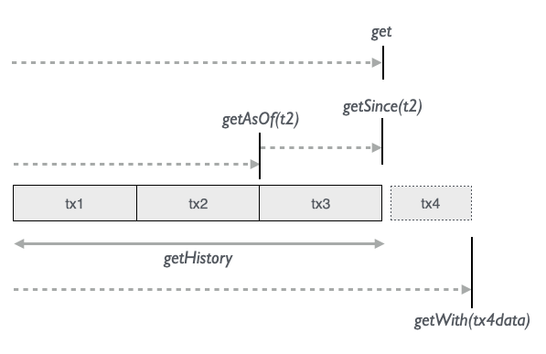
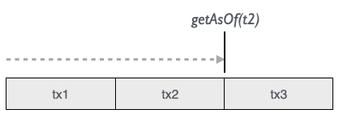
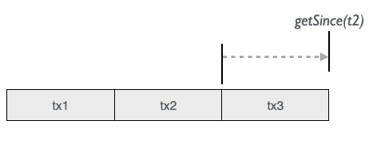
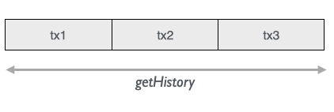
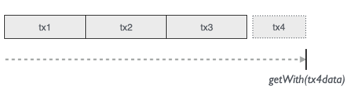

Datomic has powerful ways of accessing all the immutable data that accumulates over time in the database:

The 5 time getters offer us valuable insight into the database from various perspectives:
| Semantics | method |
|---|---|
| Current view of the database | get |
| How the db looked after tx2 was transacted | getAsOf(t2) |
| Db with only data since (excluding) tx2 until now | getSince(t2) |
| All transactions over time | getHistory |
| “What if”-look into the future of Now + tx4data | getWith(tx4data) |
The amount of data returned can be limited by adding a max row parameter (to any of the getters above):
val some30persons = Person.name.age.get(30)
val some20personsAsOfNov5 = Person.name.age.getAsOf(nov5date, 20)
val some10personsAddedSinceNov5 = Person.name.age.getSince(nov5date, 10)
// The `with` methods have the limit parameter as their first argument since
// the last argument is a vararg for the test data.
val some25personsWithNewData = Person.name.age.getWith(25, <txTestData>)
getHistory(n: Int) (with a limit) is not implemented since the whole history data set normally needs to be retrieved and sorted to give chronological meaningful information.
The two methods getAsOf(t) and getSince(t) takes a point in time in the database. Each transaction in Datomic is an entity with an id like all other entities saved in the database. The transaction id, or tx, and its equivalent transaction value t, both of type Long, or a java.util.Date can be used as a point in time for the time getters.
t is a Long value that Datomic creates along the transaction id. It’s not necessarily continuous like a traditional auto-increment id, so you can’t expect a previous or next t to represent a transaction.
When we perform a transaction, a Molecule TxReport is returned with information about the transaction result. We can get the three points in time mentioned above from this:
for {
txReport <- Person.name("bob").save
t = txReport.t
tx = txReport.tx
date = txReport.inst // `inst` for Datomics `instant` type (java.util.Date)
} yield ()
Another way to get a point in time is to add one or the other generic point-in-time attribute to a molecule. We could for instance ask at what point in time, bob’s name was asserted:
for {
t <- Person.name_("bob").t.get.map(_.head)
tx <- Person.name_("bob").tx.get.map(_.head)
txInst <- Person.name_("bob").txInst.get.map(_.head)
} yield ()
Or we can simply apply a java.util.Date of interest, like getAsOf(nov5at1015am).
As a convenience, we can also simply pass the txReport itself as a “point in time”.
So, here are , and we end being able to call for instance getAsOf(...) in 4 different ways:
Person.name.getAsOf(t)
Person.name.getAsOf(tx)
Person.name.getAsOf(txInst) // or some clock time
Person.name.getAsOf(txReport)
Whenever t is mentioned in the following text, you can also think of tx, txInst (Date) or txReport.
getAsOf(t) and getSince are complementary functions that either get us a snapshop of the database at some point in time or a current snapshot filtered with only changes after a point in time. Like before/after scenarios.
Calling getAsOf(t) on a molecule gives us the data as of a certain point in time like t2:

Let’s look at an example of a database that has 3 transactions:
for {
txReport1 <- Person.name("John").likes("pizza").save
johnId = txReport1.eid // getting created entity id from tx report
t1 = txReport1.t // getting t from tx report
t2 <- Person(johnId).likes("sushi").update.map(_.t)
t3 <- Person.name("Lisa").likes("thai").update.map(_.t)
} yield ()
We can then get the db value as it looked like at 3 points in time:
Person.name.likes.getAsOf(t1).map(_ ==> List(("John", "pizza")))
Person.name.likes.getAsOf(t2).map(_ ==> List(("John", "sushi")))
Person.name.likes.getAsOf(t3).map(_ ==> List(("John", "sushi"), ("Lisa", "thai")))
As a complementary function to getAsOf(t) we have getSince(t) that gives us a snapshot of the current database filtered with only changes added after/since t:

Contrary to the getAsOf(t) method, the t is not included in getSince(t). Using our example we can ask of accumulated values since various points in time:
// since t1 (not included): t2 + t3 accumulated
Person.name.likes.getAsOf(t1).map(_ ==> List(("John", "sushi"), ("Lisa", "thai")))
// since t2 (not included): t3
Person.name.likes.getAsOf(t2).map(_ ==> List(("Lisa", "thai")))
// since t3 (not included): nothing since t3
Person.name.likes.getAsOf(t3).map(_ ==> List())
As you can see, it can be valuable to ask “What happened since t2?” and get the answer “‘Lisa liked thai’ was added”.
The history perspective gives us all the assertions and retractions that has happened in the lifetime of the database(!)

Theoretically we could ask for all historical values (although Datomic doesn’t allow a full scan of the whole database):
// Theoretical full scan (just to show all datoms in our example)
Person.e.a.v.t.op.getHistory.map(_ ==> List(
johnId, ":Person/name", "John", t1, true,
johnId, ":Person/likes", "pizza", t1, true,
johnId, ":Person/likes", "pizza", t2, false,
johnId, ":Person/likes", "sushi", t2, true,
lisa, ":Person/name", "Lisa", t3, true,
lisa, ":Person/likes", "thai", t3, true
))
We use the generic Molecule attributes e, a, v, t/tx/ txInst, op to retrieve the Datom values:
e |
a |
v |
t / tx/ txInst |
op |
|---|---|---|---|---|
| Entity | Attribute | Value | Transaction | Operation Assert (true) / Retract (false) |
Long |
String |
Any |
Long/Long/Date |
Boolean |
Now let’s extract some useful information, like how the johnId entity has changed over time:
Person(johnId).e.a.v.t.op.getHistory.map(_ ==> List(
johnId, ":Person/name", "John", t1, true,
johnId, ":Person/likes", "pizza", t1, true,
johnId, ":Person/likes", "pizza", t2, false,
johnId, ":Person/likes", "sushi", t2, true
))
As you see, we have now filtered the history database to only contain datoms with entity id johnId. A Molecule convenience method lets us apply an entity id to the initial Namespace. We could also apply it to the generic e attribute and get the same result.
Another thing is also, that order of the returned data set is not guaranteed, so we will normally need to sort the output, in this case by transaction value, then operation to get the desired order (in the following examples we’ll skip sorting for clarity though):
Person.e(johnId).a.v.t.op.getHistory.map(_.sortBy(r => (r._4, r._5)) ==> List(
johnId, ":Person/name", "John", t1, true,
johnId, ":Person/likes", "pizza", t1, true,
johnId, ":Person/likes", "pizza", t2, false,
johnId, ":Person/likes", "sushi", t2, true
))
We can involve specific attributes like Person.like:
How has John’s taste developed?:
Person(johnId).like_.v.t.op.getHistory.map(_ ==> List(
"pizza", t1, true, // pizza
"pizza", t2, false, // no longer pizza
"sushi", t2, true // sushi
))
Since we declared which attribute to look for, there was no reason to return it, and we made it tacit with an underscore to like_.
What has John liked?:
Person(johnId).like_.v.op_(true).getHistory.map(_ ==> List(
"pizza", // pizza
"sushi" // sushi
))
We could also follow the values of an attribute for multiple entities:
Who liked what and when?
Person.e.like_.v.txInst.op_(true).getHistory.map(_ ==> List(
johnId, "pizza", date1,
johnId, "sushi", date2,
lisa, "thai", date3
))
What was disliked and when?
Person.like_.v.txInst.op_(false).getHistory.map(_ ==> List(
"sushi", date2
))
We can even track historical transaction meta data, here with an example from the Provenance example in the Day-of-Datomic test suite:
Who changed the title and when?
Story.url_(ecURL).title.op.tx
.Tx(MetaData.usecase.User.firstName).getHistory.map(_ ==> List(
("ElastiCache in 6 minutes", true, stuTxId, "AddStories", "Stu"), // Stu adds story
("ElastiCache in 6 minutes", false, edTxId, "UpdateStory", "Ed"), // Ed updates title
("ElastiCache in 5 minutes", true, edTxId, "UpdateStory", "Ed") // Ed updates title
))
“What titles did Ed retract and in what use cases?"
Story.url_(ecURL).title.op_(false)
.Tx(MetaData.usecase.User.firstName_("Ed")).getHistory.map(_ ==> List(
("ElastiCache in 6 minutes", "UpdateStory")
))
Note the Tx (with capital T) that initiates adding a transaction meta data molecule. This is information that is added to the transaction entity, independently of the main data - like cross-cutting audit data.
Another example of transaction meta data could be internal company auditing data like “use case id”, “who took this step in the use case”, “what state is the use case currently in” etc. Being able to model and query such auditing data back in time seems like an extremely valuable feature.
We can make a speculative transaction with getWith(txData) and see how the database would look then:

The current database is filtered in-memory with the applied extra transaction data. This is a very powerful way of testing future-like “what-if” scenarios. We don’t need to do any clean-up since all transaction data is automatically garbage-collected.
Continuing our example we could add another person and see how the database would then look. We can construct the transaction data to add with a call to getSaveStmts on a save molecule:
Person.name.likes.getWith(
// "Transaction molecule" with "transact John" tx data
Person.name("Eddy").likes("cakes").getSaveStmts
).map(_ ==> List(
("John", "sushi"),
("Lisa", "thai"),
("Eddy", "cakes") // Eddy correctly saved
)
Likewise we can test the effect of other operations:
Person.name.likes.getWith(
Person.name.likes.getInsertStmts(
("John", "burger"),
("Sara", "french")
)
).map(_ ==> List(
("John", "sushi"),
("Lisa", "thai"),
("John", "burger"), // John and Sara were correctly inserted
("Sara", "french")
)
Person.name.likes.getWith(
Person(lisa).likes("lebanese").getUpdateStmts
).map(_ ==> List(
("John", "sushi"),
("Lisa", "lebanese") // Lisa correctly now likes lebanese food
)
Person.name.likes.getWith(
johnId.getRetractStmts
).map(_ ==> List(
("Lisa", "thai")
// (John was correctly retracted)
)
And here we transact all the above operations as one what-if scenario:
Person.name.likes.getWith(
Person.name("Eddy").likes("cakes").getSaveStmts,
Person.name.likes.getInsertStmts(
("John", "burger"),
("Sara", "french")
),
Person(lisa).likes("lebanese").getUpdateStmts,
johnId.getRetractStmts
).map(_ ==> List(
("Eddy", "cakes"), // saved
("John", "burger"), // inserted
("Sara", "french"), // inserted
("Lisa", "lebanese") // updated
// (johnId retracted)
)
Assigning transaction molecules to variables can help us modularize tests where we could for instance be interested in seeing if various orders of transactions will produce the same result:
for {
save <- Person.name("John").age(24).getSaveStmts
insert <- Person.name.age getInsertStmts List(("Lisa", 20), ("Pete", 55))
update <- Person(johnId).age(25).getUpdateStmts
retract <- someOtherPersonId.getRetractStmts
expectedResult = List(
("John", 25),
("Lisa", 20),
("Pete", 55)
)
_ <- Person.name.age.getWith(save, insert, update, retract).map(_ ==> expectedResult)
_ <- Person.name.age.getWith(insert, update, retract, save).map(_ ==> expectedResult)
// etc..
} yield ()
There’s no limit on the amount of transaction data applied, so more complex scenarios can be simulated too.
All molecules expect an implicit database connection object to be in scope. The connection object normal communicates with the real database, but we can ask it to communicate with an in-memory “test database” instead that accepts what-if transactional data as we saw above. But this time continuously for all ordinary transaction molecules.
It’s a bit lit a git branch where we can always go back to the master branch / the live database.
When the connection/db goes out of scope it is simply garbage collected automatically by the JVM. At any point we can also explicitly go back to continuing using our live db.
To make a few tests with our filtered db we can call conn.testDbAsOfNow:
implicit val futConn = ...
for {
conn <- futConn
// Current state
_ <- Person(johnId).name.age.get.map(_.head ==> ("John", 24))
// Create "branch" of our production db as it is right now
_ = conn.testDbAsOfNow
// Perform multiple operations on test db
_ <- Person(johnId).name("Johnny").update
_ <- Person(johnId).age(25).update
// Verify expected outcome of operations
_ <- Person(johnId).name.age.get.map(_.head ==> ("Johnny", 25))
// Then go back to live db
_ = conn.useLiveDb
// Live state is unchanged
_ <- Person(johnId).name.age.get.map(_.head ==> ("John", 24))
} yield ()
When molecules are used inside domain classes we want to test the domain operations also without affecting the state of our production database. And also ideally without having to create mockups of our domain objects. This is now possible by setting a temporary test database on the implicit connection object that all molecules expect to be present in their scope - which includes the molecules inside domain classes.
When we test against a temporary filtered database, Molecule internally uses the with function of Datomic to apply transaction data to a filtered database that is simply garbage collected when it goes out of scope.
To make a few tests on a domain object that have molecule calls internally we can now do like this:
implicit val futConn = ...
for {
conn <- futConn
// Some domain object that we want to test
domainObj = MyDomainClass(params..) // having molecule transactions inside...
_ = domainObj.myState ==> "initial state"
// Create "branch" of our production db as it is right now
_ = conn.testDbAsOfNow
// Test some domain object operations
_ = domainObj.doThis
_ = domainObj.doThat
// Verify expected outcome of operations
_ = domainObj.myState ==> "some expected changed state"
// Then go back to production state
_ = conn.useLiveDb
// Initial state is unchanged
_ = domainObj.myState ==> "initial state"
} yield ()
Since internal domain methods will in turn call other domain methods that also expects an implicit conn object then the same test db is even propragated recursively inside the chain of domain operations.
We can apply the above approach with various time views of our database:
conn.testDbAsOfNow
conn.testDbAsOf(t)
conn.testDbSince(t)
conn.testWith(txData)
This make it possible to run arbitrarily complex test scenarios directly against our production data at any point in time without having to do any manual setup or tear-down of mock domain/database objects!